πάρειμι = ἐνθάδε ἐστίν ↔︎ ἐνθάδε οὐκ ἔστιν

ἀμφορεὺς καὶ ἄλλος ἀμφορεύς
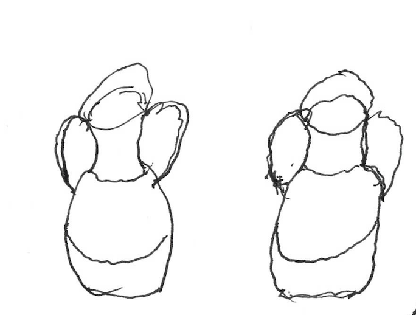
πρόσωπα· Γρηγόριος, Εὐγενίᾱ, Σωσίᾱς.
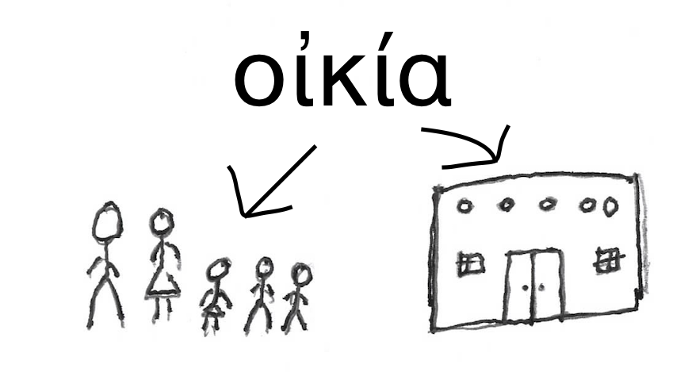
ὁ Γρηγόριός ἐστιν ἐν τῇ οἰκίᾳ. καὶ ἡ Εὐγενίᾱ ἐστὶν ἐν τῇ οἰκίᾳ.
οἶνος
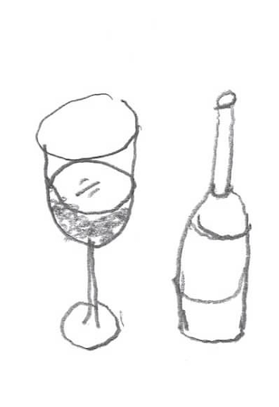
οἰνῶνι ← οἰνών
οἰνών = τόπος ἐν ῷ ἐστιν ἀμφορεύς τοῦ οἴνου
Γρηγόριος λέγει, «ἆρα ἔστιν οἶνος;» ἡ δὲ Εὐγενίᾱ λέγει, «οἶνος; ἆρα ἔστιν οἶνος; ἔστιν οἶνος, ἐν τῷ οἰνῶνι. ὁ οἶνός ἐστιν ἐν τῷ οἰνῶνι.»
πολύς ≍ πολλοί
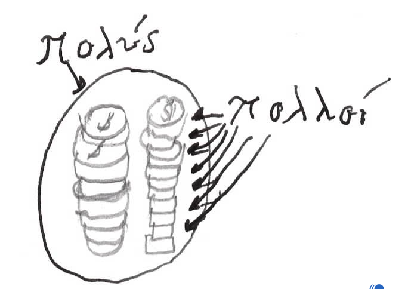
ὁ δὲ Γρηγόριος ἔρχεται εἰς τὸν οἰνῶνα. ἆρα ἔστιν οἶνος ἐν τῷ οἰνῶνι; ναί, οἶνος ἔστιν. πολὺς ὁ οἶνός ἐστιν. ὁ οἶνος ἐν τῷ οἰνῶνι πολύς ἐστιν.
ἀμφορεύς
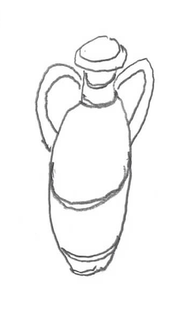
ὁ ἄνθρωπος ἔνεστιν.
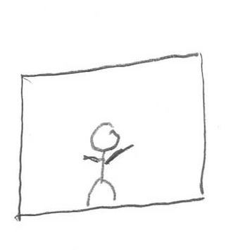
ὁ Γρηγόριος ὁρᾷ ἀμφορέᾱς. πολλοὶ ἢ ὀλίγοι ἀμφορῆς εἰσιν; πολλοί εἰσιν. τί ἔνεστιν ἐν τοῖς ἀμφορεῦσιν; οἶνος ἔνεστιν.
πολλοὶ ἢ ὀλίγοι ἀμφορῆς εἰσιν; πολλοί εἰσιν. ἐν τοῖς ἀμφορεῦσιν ἐστὶν οἶνος. πόσοι ἀμφορῆς εἰσιν;
ἀριθμεὶ
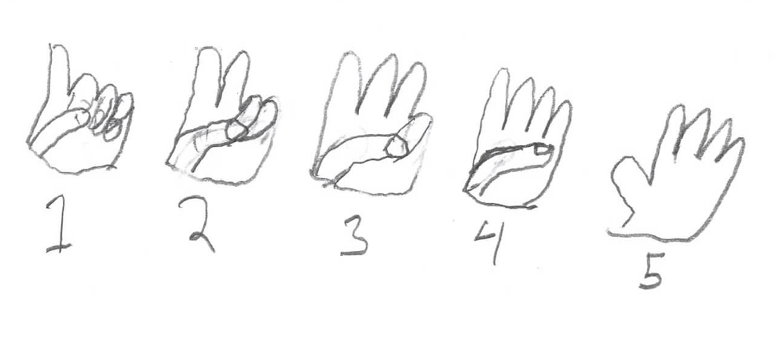
ὁ Γρηγόριος ἀριθμεῖ τοὺς ἀμφορέᾱς αὐτοῦ· εἷς, δύο, τρεῖς, τέσσαρες, πέντε, ἕξ, ἑπτά, ὀκτώ, ἐννέα, δέκα, ἕνδεκα.
πάρειμι = ἐνθάδε ἐστίν ↔︎ ἐνθάδε οὐκ ἔστιν
ἀμφορεὺς καὶ ἄλλος ἀμφορεύς
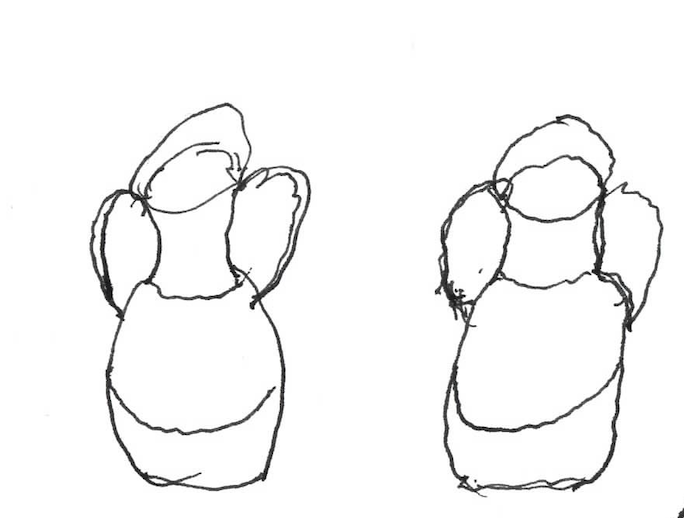
μόνον ἕνδεκα. ὁ ἀριθμὸς τῶν ἀμφορέων οὐκ ἔστιν δώδεκα, ἀλλὰ ἕνδεκα. ἕνδεκα πάρεισιν, εἷς ἄπεστιν. ποῦ ἐστιν; ποῦ ἐστιν ὁ ἀμφορεὺς ὁ ἄλλος;
ὁ δεσπότης καλεύει, “ἐλθέ!”
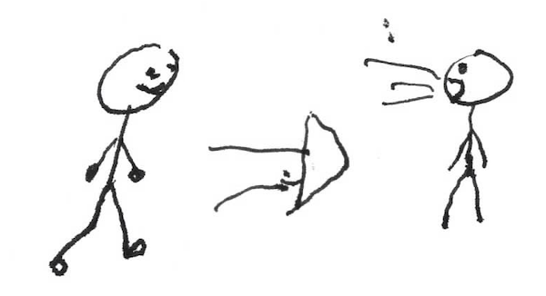
ὁ δοῦλος ἔχρεται
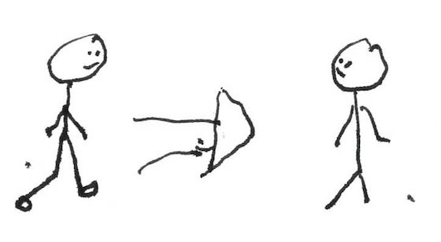
ὁ Γρηγόριος ὀργίζεται. καὶ καλεῖ τὴν γυναῖκα αὐτοῦ «Εὐγενίᾱ, ἐλθέ!» ἡ δὲ Εὐγενίᾱ ἔρχεται εἰς τὸν οἰνῶνα. νῦν ἡ Εὐγενίᾱ πάρεστιν. ὁ δὲ λέγει, «πόσοι ἀμφορῆς τοῦ οἴνου εἰσίν;» ἡ δὲ λέγει «ἆρα οὐ δώδεκα;» καὶ ἀριθμεῖ αὐτούς. εἷς, δύο, τρεῖς … ἐννέα, δέκα, ἕνδεκα. ἡ Εὐγενίᾱ ἀριθμεῖ ἕνδεκα ἀμφορέᾱς τοῦ οἴνου.
λέγει οὖν ἡ Εὐγενίᾱ, «μόνον ἕνδεκα ἀμφορῆς εἰσιν, οὐ δώδεκα. κάλει τοὺς δούλους.» ὁ οὖν Γρηγόριος καλεῖ τοὺς δούλους αὐτοῦ «δοῦλοι, ἔλθετε!»
ὁ οὖν Σωσίᾱς ἔρχεται, ὁ δὲ Τροχίλος οὔ. νῦν δὲ εἷς τῶν δούλων πάρεστιν, οἱ ἄλλοι ἄπεισιν. ὁ δὲ Γρηγόριος ὁρᾷ τὸν δοῦλον αὐτοῦ, Σωσίᾱν, τὸν δὲ δοῦλον Τροχίλον οὐ ὁρᾷ. ὁ μὲν Σωσίᾱς πάρεστιν, ὁ δὲ Τροχίλος ἄπεστιν. ὁ Γρηγόριος, ἡ Εὐγενίᾱ, καὶ ὁ Σωσίᾱς πάρεισιν.
ἐνθάδε ἐστίν = πἀρεστιν.
Σωσίᾱς· «ἰδού, ὁ δοῦλός σου ἐνθάδε ἐστίν.»
Γρηγόριος· «τί; εἷς μόνος δοῦλος πάρεστιν; ποῦ εἰσιν οἱ ἄλλοι; ποῦ ἐστιν Τροχίλος; κάλει τὸν Τροχίλον.»
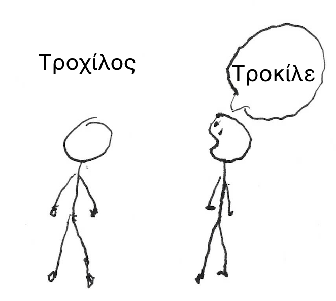
ὁ δὲ Σωσίας καλεῖ Τροχίλον, «Τροχίλε, ἐλθέ». Τροχίλος δὲ οὔτε ἀκούει τοῦ Σωσίου, οὔτε ἔρχεται. ὁ οὖν Σωσίᾱς πάλιν καλεῖ αὐτόν, «ἐλθέ, ὦ Τροχίλε». ὁ Τροχίλος ἔρχεται, καὶ νῦν δύο δοῦλοι πάρεισιν.
πρόσωπα· Γρηγόριος, Εὐγενίᾱ, Σωσίᾱς, Τροχίλος.
Τροχίλος, ὃς τὸν δεσπότην οὐχ ὁρᾷ, ἐρωτᾷ τὸν Σωσίᾱν, «τί ἐστιν, ὦ Σωσία;» Σωσίᾱς· «στ! ὁ κύριος πάρεστιν. ἀσπάζου αὐτόν.»
ἀσπάζεται = τὸ χαῖρε λέγει
ὁ δὲ Τροχίλος ὁ δοῦλος ἀσπάζεται τὸν δεσπότην, «χαῖρε, ὦ κῡ́ριε».
ὁ δὲ κύριος αὐτόν ἀσπάζεται, «χαῖρε καὶ σύ, δοῦλε»
Τροχίλος· «τί ἐστιν, δέσποτα;»
| ὀριστική | προστακτιή |
|---|---|
| ἀκούει | ἄκουσον |
| σιᾷ | σίγα |
| ἀποκρίνεται | ἀποκρίνου |
Γρηγόριος· «στ! σῑ́γᾱ, δοῦλε. σῑ́γᾱ καὶ ἄκουσον». ὁ μὲν δοῦλος σῑγᾷ, ὁ δὲ δεσπότης λέγει, «ἐν τῷ οἰνῶνί μού εἰσιν μόνον ἕνδεκα ἀμφορῆς οἴνου. ποῦ ἐστιν ὁ ἄλλος;»
ὁ μὲν δοῦλος σῑγᾷ, οὐδὲ ἀποκρῑ́νεται.
ἡ δὲ Εὐγενίᾱ λέγει, «ἀποκρῑ́νου, Τροχίλε! ὁ κῡ́ριος ἐρωτᾷ σε.»
ὁ οὖν Τροχίλος ἀποκρῑ́νεται, «ὁ οἶνός σου οὐκ ἐνθάδε ἐστίν. οὐκ οἶδα ἐγώ. ἐρώτᾱ Σωσίᾱν!»
ὁ μὲν οὖν Γρηγόριος νῦν τὸν Σωσίᾱν ἐρωτᾷ, «ποῦ ἐστιν ὁ οἶνός μου, Σωσία;»
ὁ δὲ Σωσίᾱς οὐδὲν ἀποκρῑ́νεται. ὁ δὲ Γρηγόριος πάλιν ἐρωτᾷ αὐτόν, «ἀποκρῑ́νου, δοῦλε, ποῦ ἐστιν ὁ ἄλλος ἀμφορεύς;»
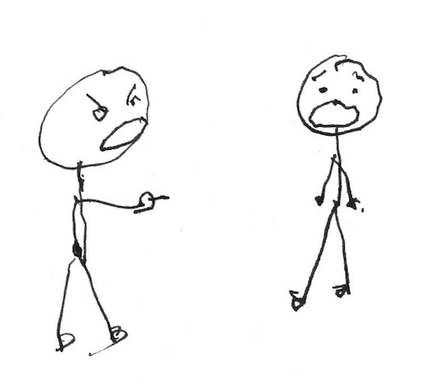
ὁ μὲν Σωσίᾱς οὐ λέγει, ὁ δὲ Τροχίλος κατηγορεῖ τοῦ Σωσίου, «ὁ ἀμφορεύς σου ἐν τῷ σάκκῳ αὐτοῦ ἐστιν.»
ἡ δὲ Εὐγενίᾱ λέγει, «ἄκουσον, Σωσία, ὁ Τροχίλος κατηγορεῖ σου.»
ὁ δὲ Σωσίᾱς· «τί, τίνος κατηγορεῖ ὁ Τροχίλος; ἐμοῦ;»
Γρηγόριος δὲ λέγει, «σῑ́γᾱ, Τροχίλε. ὁ δοῦλος ὃς δούλου ἄλλου κατηγορεῖ, οὐκ ἔστιν δοῦλος ἀγαθός, ἀλλὰ πονηρός». σῑγᾷ οὖν ὁ Τροχίλος.
| ὀριστική | προστακτιή |
|---|---|
| τίθησι(ν) | θές |
τράπεζα καὶ σάκκος
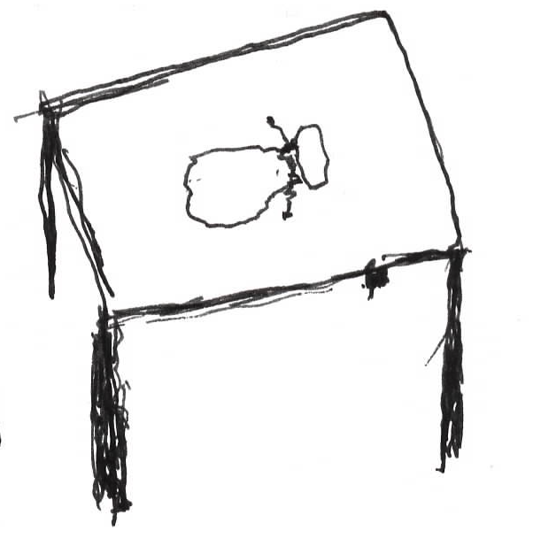
οὐκ οὖν κατηγορεῖ τοῦ Σωσίου ὁ Γρηγόριος, ἀλλὰ ἐρωτᾷ αὐτόν, «ἆρα ὁ ἀμφορεύς μου ἐν τῷ σάκκῳ σου;»
Σωσίᾱς· «οὐδαμῶς, κῡ́ριε. ὁ ἀμφορεύς σου οὐκ ἔστιν ἐν τῷ σάκκῳ μου.»
Γρηγόριος· «ποῦ ἐστιν ὁ σάκκος σου;»
Σωσίᾱς· «ἰδού, ὁ σάκκος μου πάρεστιν.»
Γρηγόριος· «*θὲς τὸν σάκκον ἐπὶ τὴν τράπεζαν, καὶ ἄνοιξον αὐτόν.»
ἀνοίγει τὸν σάκκον
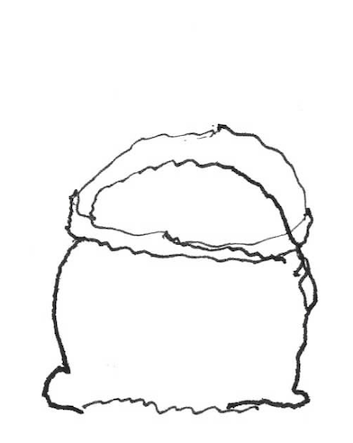
ὁ οὖν Σωσίᾱς τίθησι τὸν σάκκον ἐπὶ τήν τράπεζαν, καὶ αὐτόν ἀνοίγει. νῦν δὲ ὁ σάκκος ἐστὶν ἐπὶ τῆς τραπέζης.
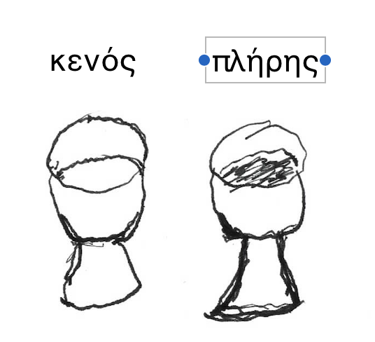
ἆρα ἀμφορεύς ἔνεστιν ἐν τῷ σάκκῳ; οὐχί. οὐκ ἔστιν οἴνου ἀμφορεὺς ἐν τῷ σάκκῳ αὐτοῦ. ὁ δεσπότης ὁ Γρηγόριος ὁρᾷ οὐδένα ἀμφορέᾱ ἐν τῷ σάκκῳ. ὁ γὰρ σάκκος τοῦ Σωσίου ἐστιν κενός.
ἀποχωρεῖ ὁ ἄνθρωπος
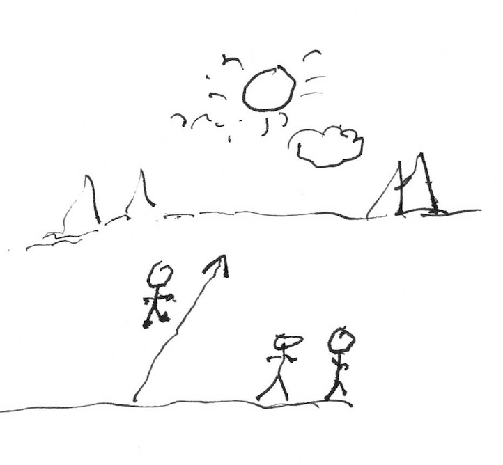
| ὀριστική | προστακτιή |
|---|---|
| ἀποχωρεῖ | ἀποχώρει |
ὁ οὖν Γρηγόριος λέγει τῇ Εὐγενίᾳ, «ἰδού, ὁ Σωσίᾱς ἐστὶν δοῦλος ἀγαθός. τὸν ἀμφορέᾱ μου οὐκ ἔχει. σοὶ δὲ εὐχαριστῶ, Σωσία, τὸν σάκκον λάβε καὶ ἀποχώρει.»
ὁ οὖν Σωσίᾱς λαμβάνει τὸν σάκκον καὶ ἀποχωρεῖ ἐκ τοῦ οἰνῶνος. ὁ δὲ Τροχίλος ἔτι πάρεστιν. ἆρα ὁ Τροχίλος τὸν οἶνον ἔχει;
ὁ Γρηγόριος νῦν ἐρωτᾷ τὸν Τροχίλον, λέγων «ποῦ ἐστιν ὁ ἀμφορεύς μου, ὦ Τροχίλε;»
ὁ δὲ Τροχίλος ἀποκρῑ́νεται, λέγων «οὐκ οἶδα. οὐκ ἔστιν ἐν τῷ σάκκῳ ἐμοῦ.»
ὁ οὖν Γρηγόριος κελεύει αὐτόν, «θὲς τὸν σάκκον ἐπὶ τὴν τράπεζαν, καὶ ἄνοιξον αὐτόν.»
ὁ Τροχίλος ἐπὶ τὴν τράπεζαν τίθησι τὸν σάκκον αὐτοῦ, ἔπειτα δὲ ἀνοίγει αὐτόν. ἆρά ἐστιν ὁ οἶνος ἐν τῷ σάκκῳ; οὐδαμῶς. οὐκ ἔστιν οὐδέν. ὁ σάκκος αὐτοῦ οὐκ ἔστιν πλήρης, ἀλλὰ κενός.
ὁ Τροχίλος λέγει, «ἰδού, τὸν οἶνόν σου οὐκ ἔχω. καὶ ἐγὼ ἀγαθός εἰμι δοῦλος,» καὶ ἀποχωρεῖ. νῦν δὲ μόνον πάρεισιν ὁ Γρηγόριος καὶ ἡ Εὐγενίᾱ. ὁ μὲν οὖν Γρηγόριος ὀργίζεται, ἡ δὲ Εὐγενίᾱ οὔ.
ὁ δὲ ἐρωτᾷ, «ἀλλὰ δὲ ποῦ ἐστιν ὁ ἀμφορεὺς ὁ ἄλλος. ἕνδεκα πάρεισιν, εἷς ἄπεστιν. ἆρα σὺ οἶδας, ὦ Εὐγενίᾱ;»
ἡ δὲ Εὐγενίᾱ γελᾷ, λέγουσα «οὐκ οἶδα ἐγώ.»
ἀλλὰ ἐν τῷ σάκκῳ αὐτῆς ἐστιν ἀμφορεὺς τοῦ οἴνου, οὐ πλήρης οἴνου, ἀλλὰ κενός.